Tocando Brasília
Playing Brasília
Alexandre Rangel, 2019Um jogo? Um instrumento? Ou uma cidade — inteligente? A obra "Tocando Brasília", de Alexandre Rangel, explora a relação entre os papéis de jogador e cidadão, propondo momentos de sensibilização e atuação política, em dias de vigilância, de controle de dados e da internet das coisas. Quem manipula quem: a cidade ou o ser humano? O software interativo mistura imagens de satélite e textos do urbanista Lúcio Costa, permitindo que o público manipule os mapas e toque a cidade como uma partitura.
A game? An instrument? Or a smart city? Alexandre Rangel's "Playing Brasília" explores the relationship between the roles of player and citizen, proposing moments of sensitization and political action in days of surveillance, data control and the internet of things. Who manipulates whom: the city or the human being? The interactive software mixes satellite images and texts by urbanist Lúcio Costa, allowing the public to manipulate the maps and play the city like a score.
Tocando Brasília
Playing Brasília
Protótipo da obra exposto na mostra "Brasília Mapping Festival 2019: #smartcities".Museu Nacional da República, Brasília Work prototype shown at "Brasília Mapping Festival 2019: #smartcities".
Museu Nacional da República, Brasília
Tocando Brasília
Playing Brasília
software artAlexandre Rangel, 2019
Vídeos — desenvolvimento da obra
Work development — videos


Fotos da obra
Work pictures
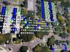
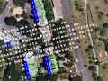
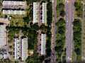
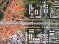
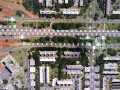
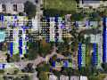
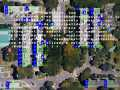
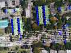
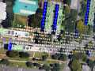
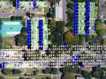
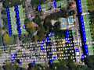
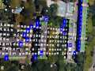
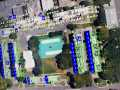
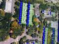
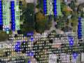
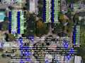
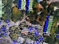
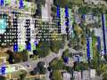
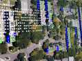
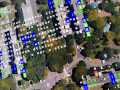
Tocando Brasília
Playing Brasília
Registro de desenvolvimento da obra.Alexandre Rangel, 2019 Work-in-progress recording.
Alexandre Rangel, 2019